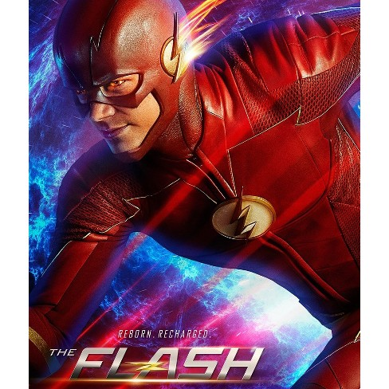

Family Guy is an animated sitcom created, produced and written by Seth McFarlane. The series follows the life of a family on Spooner street, Quahog in the State of Rhode Island. Peter Griffin(Dad), Lois Griffin(Mum), Meg, Chris, Stewie Griffin(Children) and their talking dog, Brian. The show follows the sick, twisted life of this family, with Peter being a "normal average Joe", Meg and Chris being the most unpopular kids in town, Stewie, the one year old baby that wants to kill his mother and their alcoholic self pretentious dog.
The Flash is a series from the DC Universe. It follows the life of speedster Barry Allen who gets struck by lightning from the particle accelerator, giving him supernatural abilities to move roughly 8.3 million mph. This causes him to take on the life of a hero, using his superspeed to fight crime whilst discovering the truth about his past and future.